INTRODUCTION - ON BOARD INSTRUMENTS
- Path
- Descriptions > 55 ELECTRICAL EQUIPMENT > 5560 INSTRUMENTS > INTRODUCTION - ON BOARD INSTRUMENTS
- Kind
- system description
- Applies to
- engines: 1.4 8v, 1.6 16v, 1.3 JTD 16V, 1.9 JTD 8V; production: da 12/03; only with equipment: MY 2005
- Interactive page
- https://sloeber94.github.io/elrnDB-fDbl/en/#/223000255
Applies to: engines: 1.4 8v, 1.6 16v, 1.3 JTD 16V, 1.9 JTD 8V; production: da 12/03; only with equipment: MY 2005
INSTRUMENT PANEL
- COMFORT
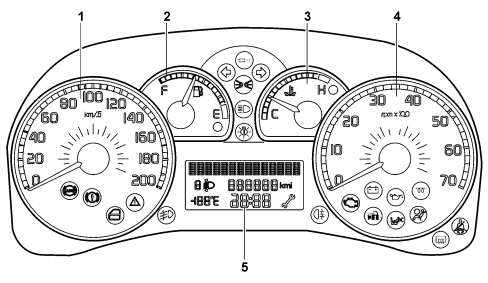
- MODAL
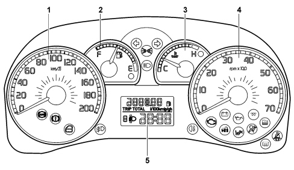
- STRIP (for the Natural Power version)
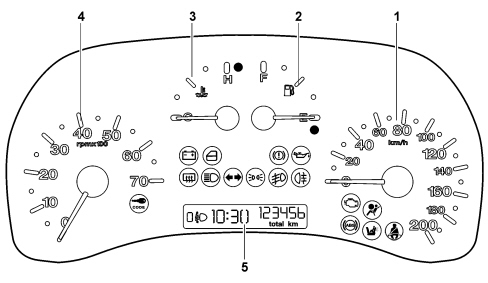
Indicators
The control panel is installed behind the steering wheel. It is connected to the CAN network and includes 4 gauges built using step motors:
1 - Electronic speedometer
2 - Fuel level (with insufficient fuel level warning light)
3 - Engine coolant temperature gauge (with overheating warning light)
4 - Electronic rev counter
5 - Display (available in three different versions)
Warning lights
There are also numerous LED negative contrast warning lights (there is also preparation for warning lights that can be activated by the CAN)
Buzzer (for comfort panel only)
The instrument panel contains a buzzer with 8 different settings to carry out the following functions:
- Alarm/warning/danger signals
- button pressing roger beep
The acoustic signals can vary in intensity and frequency depending on the function signalled.
The volume can be adjusted down to zero (signalling excluded).
Keys
Comfort Panel
The instrument has 5 buttons for the management of the headlamp alignment ("CAF+", "CAF-" buttons), the dimming and the Setup Menu ("MODE", "+", "-" buttons)
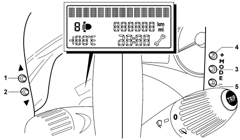
1, 2 - "CAF+" and "CAF-" buttons
3 - "MODE" button
4, 5 - "+" and "-" buttons
"MODE" buttons:
- pressing it briefly allows the activation of the set up (illustrated below) and confirms it and memorizes the settings
- pressing it for longer produces the return to the standard screen
"+" and "-" keys:
- allows the selection, setting and adjustment of the functions in the set up menu
- allows the adjustment of the dimming when not in the set up menu
"CAF+" and "CAF-" buttons:
- adjust the setting of the headlamp alignment corrector
The TRIP function is managed by the sepcial button in the steering column switch unit
Modal Panel
The instrument has 4 buttons for the management of the headlamp alignment ("CAF+", "CAF-" buttons) and the adjustment of the clock ("+", "-" buttons).
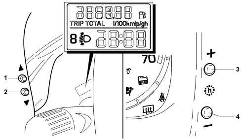
1, 2 - "CAF+" and "CAF-" buttons
3, 4 - "+" and "-" buttons
The TRIP function is managed by the sepcial button in the steering column switch unit
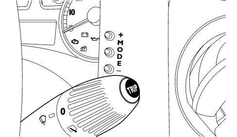
Strip panel
The instrument has 4 buttons for the management of the headlamp alignment ("CAF+", "CAF-" buttons) and the adjustment of the clock ("h" button) and the TRIP function (trip button).
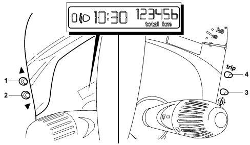
1, 2 - "CAF+" and "CAF-" buttons
3 - "h" button
4 - "Trip" button
Display
The control panel display is available in three versions depending on the vehicle's on-board features:
- COMFORT type display
- MODAL type display
- STRIP type display
Display (comfort)
The COMFORT panel is illustrated in the photo underneath showing the standard screen at the Key-ON with the dipped headlamps on.
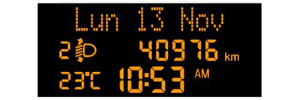
It is a negative transreflective three-line alphanumerical ESTN type display.
The top line, with 14 dot matrix characters (7x5) is for displaying:
- Date
- Trip computer data (processed by the control panel)
- Set-up menu with messages for settings/adjustments
- Messages about: activation of functions/service/failure/warning
The bottom two lines in segments are for displaying:
- Milometer
- Clock
- Outside temperature (where the sensor is fitted)
- Headlamp alignment corrector reading
- Service symbol (spanner)
Display (modal)
It is a (negative transreflective) two-line alphanumerical TN type display.
The top line is for displaying:
- Milometer and trip meter
- Icons for Trip Computer data
The bottom line is for displaying:
- Clock
- Headlamp alignment corrector reading
The MODAL panel is illustrated in the photo underneath showing the standard screen at the Key-ON with the dipped headlamps on.
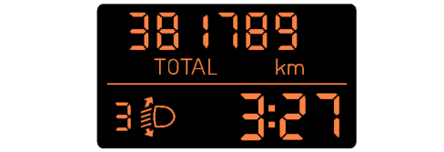
Display (strip)
The STRIP panel is illustrated in the photo underneath showing the standard screen at the Key-ON with the dipped headlamps on
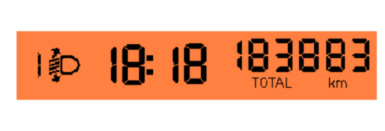
It is a TN (positive transreflective) one line display for displaying:
- Milometer and trip meter
- Trip computer
- Clock
- Headlamp alignment corrector reading
WARNING LIGHTS
The warning lights in the instrument panel are shown in the diagram and in the diagram below
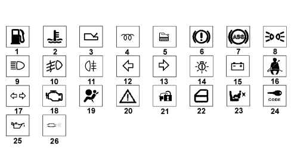
1 - Fuel reserve
2 - Maximum engine coolant temperature
3 - Heated rear window
4 - Heater plugs (JTD)
5 - Water in diesel filter sensor (JTD for the modal panel)
6 - Handbrake applied / insufficient brake fluid level / EBD system failure
7 - ABS failure
8 - Side lights
9 - Main beam headlamps
10 - Fog lights
11 - Rear fog lamps
12 - Left direction indicator
13 - Right direction indicator
14 - Outside lights failure (COMFORT panel only)
15 - Alternator failure
16 - Seat belts not fastened
17 - Left/right direciton indicator (STRIP version instrument panel only)
18 - EOBD and engine management system failure
19 - AIR BAG failure
20 - General failure
21 - Vehicle protection system failure (Comfort and Modal instrument panel only)
22 - Doors / boot open signal
23 - Passenger AIR BAG deactivation
24 - FIAT code failure STRIP instrument panel only
25 - Minimum engine oil pressure
26 - Pollution control filter blocked (for JTD engines COMFORT instrument panel)
18-WAY CONNECTOR PIN OUT
The rear view of the instrument panel and the connector are illustrated below.
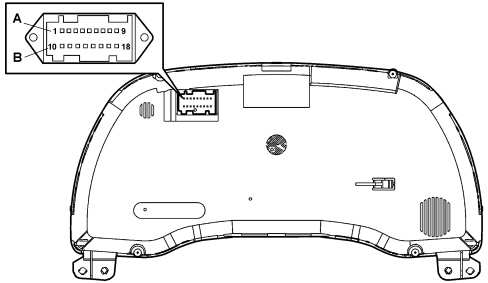
The tables below show the operation of the instrument panel connector pins for the three versions:
PIN | FUNCTION | STRIP |
|---|---|---|
1 | +15 (+key) | X |
2 | +30 | X |
3 | B – CAN A | X |
4 | B – CAN B | X |
5 | Reference signal for headlamp alignment actuators | X |
6 | + dipped headlamps signal for headlamp alignment corrector | X |
7 | Earth | X |
8 | Oil pressure (preparation) | – |
9 | Water temperature (preparation) | – |
10 | Lights + input from dimmer (preparation) | – |
11 | Engine rpm signal (preparation) | – |
12 | Input for warning light available | – |
13 | AIR BAG failure warning light | X |
14 | Passenger Air BAG disabled warning light | X |
15 | Seat belts not fastened/driving lights warning light | X |
16 | Not connected | – |
17 | Not connected | – |
18 | Not connected | – |
PIN | FUNCTION | MODALE | COMFORT |
|---|---|---|---|
1 | +15 (+key) | X | X |
2 | Earth | X | X |
3 | +30 | X | X |
4 | Signal from Trip Computer button on steering column switch unit | X | X |
5 | Not connected | – | – |
6 | Reference signal for headlamp alignment actuators | X | X |
7 | + dipped headlamps signal for headlamp alignment corrector | X | X |
8 | B-CAN B | X | X |
9 | B-CAN A | X | X |
10 | Operation of i.e./EOBD failure warning light from ECM | X | X |
11 | Not connected | – | – |
12 | Not connected | – | – |
13 | AIR BAG failure warning light | X | X |
14 | Passenger Air BAG disabled warning light | X | X |
15 | Seat belt not fastened warning light | X | X |
16 | Not connected | – | – |
17 | + Outside temperature sensor | – | X |
18 | - Outside temperature sensor | – | X |
INDICATORS
Speedometer
The instrument panel increases the actual speed value slightly (6% + 1 km/h for the Modal and Comfort panels or 8% for the Strip panel, but this increase also depends on the tyres fitted on the vehicle) for safety reasons and never exceeds the maximum tolerance recommended in the directives of the countries where the vehicle is sold.
The increase is calculated according to the panel.
At the Key ON the indicator is at 0 (zero) km/h (or mph) and the instrument panel then displays the vehicle speed information.
Rev counter
At the Key ON the indicator is at 0 (zero) RPM and the instrument panel then displays the engine rpm information.
There is also a logic to prevent fluctuations of the rev counter with the engine idling.
Fuel level gauge
Immediately or 2 seconds after the Key ON the indicator shows the fuel level information.
The reading at the start of the "fuel reserve" is red and the warning light is produced by the amber LED in the indicator graphics. The calibration of the gauge ensures maximum precision at the start of the red sector.
Engine coolant temperature gauge
Immediately or 2 seconds after the Key ON the indicator shows the engine coolant temperature information.
The reading at the start of the "danger zone" is red and the warning light is produced by the red LED in the indicator graphics. The calibration of the gauge ensures maximum precision at the start of the red sector.
Behaviour of the indicator:
- If the temperature is below 50°C the indicator is at the first reference on the scale.
- For temperatures of between 50 and 80°C the indicator moves in a linear fashion.
- For temperatures between 80 - 100°C (normal operation), the pointer should remain in a stable position in the centre of the scale.
- For temperatures between 100 and 120°C (uphill) and between 115 and 100°C (downhill) the pointer should move in a linear fashion.
- For temperatures of 120°C the pointer remains at the start of the red danger zone on the scale.
- For temperatures above 120°C the coolant overheating warning light lights up and, at the same time, the pointer is positioned at the end of the scale.
MAIN FUNCTIONS:
The main features are summarized in the table below.
Contents | STRIP PANEL | MODAL PANEL | COMFORT PANEL |
|---|---|---|---|
Speedometer | X | X | X |
Rev counter | X | X | X |
Fuel level gauge | X | X | X |
Engine coolant temperature gauge | X | X | X |
Headlamp alignment corrector | X | X | X |
Milometer | X | X | X |
Outside temperature and ice danger | – | – | X |
Dimmer light | – | – | X |
Setup menu | – | – | X |
Time | X | X | – |
Time and Date | – | – | X |
Trip Computer | X | X | X |
Service (planned maintenance) | – | – | X |
Buzzer | – | – | X |
Particle filter + Oil life | – | – | X |
Alternator failure | X | X | X |
Minimum engine oil pressure | X | X | X |
EOBD reading | X | X | X |
Heater plugs / sensor failure | – | X | X |
Water in diesel filter / sensor failure | – | X | X |
Fog lights | X | X | X |
Rear fog lamps | X | X | X |
Direction indicators | X | X | X |
Side and number plate lights | X | X | X |
Main beam headlamps | X | X | X |
Heated rear windscreen | X | X | X |
Airbag | X | X | X |
Passenger air bag deactivation | X | X | X |
Seat belts fastened | X | X | X |
ABS readings | X | X | X |
Handbrake applied / insufficient brake fluid level | X | X | X |
Immobilizer readings | X | X | X |
Speed limit exceeded | – | – | X |
Doors / boot open | X | X | X |
Outside lights check | – | – | X |
Initial check
At every Key ON a check starts on all the electronic control units present on board the vehicle with some of the warning lights in the panel coming on.
On the Comfort panel:
If the check stage detects any faults, they are displayed 5 seconds after the Key ON.
Some signals are an exception (e.g. "Minimum engine oil pressure" and/or "Inertia switch operated") and they can be displayed immediately at the Key ON.
Lighting
The display lighting is activated at the Key ON; the graphics and the indices are lit up and dimmed at the "+lights".
Dimmed lighting (Comfort panel only)
The lighting of the display, the graphics and the indices can be dimmed at "+lights".
If there are failure messages (except for "Ice danger"), the brightness of the display is automatically set at the maximum daytime value even in the "+ lights" condition.
If the side lights are deactivated, the display is 100% lit up and the brightness cannot be adjusted (dimmed). The adjustment is only possible with the exterior lights on.
When the outside lights are activated, the brightness of the displays is automatically dimmed to a pre-set level and the graphics and the indices light up.
There are 8 different possible settings for the brightness of the panel and the interior of the passenger compartment in general produced using the "+" and "-" buttons in the panel.
The lighting brightness cannot be reduced to zero.
If the brightness is adjusted the first line of the display shows the specific message and the brightness adjustment symbols come on/go off. With all the symbols lit, the brightness is at the maximum level.
The adjustment of the dimmed lights is shown in the photo below (Comfort panel)
This screen remains for 5 seconds after the last adjustment command.
The effect of the adjustment is immediately visible.
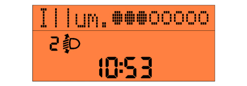
SET UP MENU (FOR COMFORT PANEL ONLY)
The set up menu functions can only be activated with the vehicle stationary except for the following function: "Speed limit" (selecting activation/deactivation of speed limit and selecting speed limit level).
By pressing the "MODE", "+" and "-" buttons in the control panel it is possible to carry out the various operations of selecting/adjusting/settings the scales displayed. The standard screen is restored after 1 minute if nothing is done.
Initial setting - instrument initialization
The tables below show the settings that can be adjusted using the set up menu and the value entered during production at the end of the line which the customer will find when they purchase the vehicle.
Feature | Default value |
|---|---|
Speed limit (On/Off) | OFF |
Speed limit (level) | 130 km/h |
Trip B (On/Off) | ON |
Clock adjustment (hh/mm) | 0:00 |
Hour mode (12h/24h) | 24h |
Date adjustment (dd/mm/yyyy) | 01/01/aaaa(aaaa:year of SW release) |
Doors/boot locking with speed >20 km/h (On/Off) (where fitted) | OFF |
Distance unit of measurement (km/mi) | km if the speedometer scale is in km mi if the speedometer scale is in mi |
Consumption unit of measurement (km/l, l/100km, mpg) | l/100km if the speedometer scale is in km mpg if the speedometer scale is in mpg |
Temperataure unit of measurement (°C / °F) (if the outside temperature sensor is present) | °C |
Language | Italian |
Buzzer volume (0...7) | 4 |
Button volume (0...7) | 4 |
Service (km/mi and days) | km if the speedometer scale is in km mi if the speedometer scale is in mi |
TRIP COMPUTER
The Trip Computer shows vehicle trip, consumption and mileage details on the control panel display.
Two types of fully independent Trip Computer modes (A and B) are available for the Comfort panel. The displays can be activated by pressing the TRIP button on the right steering wheel stalk switch.
The only mode for the Modal and Strip panels is Trip A. The instant fuel consumption cannot be displayed for the Strip panel. The average consumption and the range are only for petrol on the Strip panel.
The data display mode follows a preset order:
TRIP A:
- Range
- Distance travelled
- Average fuel consumption
- Instant fuel consumption
- Average speed
- Trip time
TRIP B:
- Distance travelled
- Average fuel consumption
- Average speed
- Trip time
The measurements displayed can be expressed according to the Decimal Metric System (km, km/h, km/l, l/100km) or the Imperial System (mi, mph, mpg) for the Comfort panel as selected by the driver (see set-up menu).
The Trip Computer is zeroed:
- manually by the user by pressing the TRIP button for a while;
- automatically when the distance travelled reaches the maximum value [9999.9 km (mi) for the Comfort panel or 3999.9 km (mi) for the Modal panel or 999.9 km (mi) for the Strip panel], or when the journey time reaches 99.59 (99 hours and 59 minutes).
- every time the battery is reconnected.
The screen for the distance travelled (Modal panel) is illustrated below.
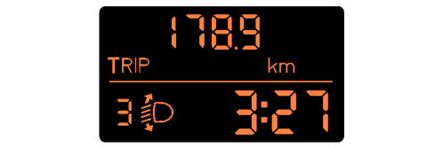
Trip computer parameters
Range [km] or [miles]:
this indicates the estimated distance that can be travelled with the fuel currently in the tank based on the same style of driving being maintained.
Distance travelled [km] or [miles]:
indicates the distance travelled by the vehicle from the "start of the journey", i.e. when the driver reset the equipment. The reading is consistent with the display on the total mileage recorder. The display is updated every 0.1 km
Average fuel consumption [km/l] or [l/100km] or [mpg]:
indicates the average consumption from the start of the journey. The unit of measurement [km/l] cannot be displayed for the Strip and Modal panels.
Instant fuel consumption [km/l] or [l/100km] or [mpg]:
indicates the constantly updated fuel consumption. This makes the driver aware of differences in fuel consumption linked to driving styles. The unit of measurement [km/l] cannot be displayed for the Strip and Modal panels.
Average speed [km/h] or [mph] :
it is calculated from the start of the journey.
Journey time [hh:mm] :
this indicates the time elapsed since the start of the journey between 0:00 and 99:59, with a resolution and update every minute. When the maximum possible value is reached, the counting is automatically zeroed.
PLANNED MAINTENANCE SIGNAL (COMFORT PANEL ONLY)
When the programmed maintenance (service) is close, the message "Service" is automatically displayed at the key on (after the initial check procedure) followed by the number of kilometres/miles until the next service is due.
The information shown on the display can also be requested by the user by selecting a special item in the set-up menu, irrespective of the interval: the kilometres (or miles) remaining are shown on the display. In this case the "Spanner" symbol does not appear.
There are 9 services that are part of the Planned Maintenance Programme designed in such a way that each of them is carried out 20,000 km / 12,000 miles or 1 year) after the previous one.
The messages are displayed automatically.
The first message is displayed automatically once at the key on, if one of the following conditions occurs:
- the mileage until the service interval is = 2000 km or the equivalent in miles.
- the days remaining until the service are = 30 days
When one of the two limits is reached, e.g. the one for the "km/mi" ("2000 km"), the signalling of the limit in days is excluded and viceversa.
Later on, the message is only displayed once at the key on at the following levels:
- 1800, 1600, 1400, 1200, 1000, 800, 600, 400, 200, 100, 50 km or the equivalent values in miles
or
- 27, 24, 21, 18, 15, 12, 9, 6, 3 days
and it is no longer displayed during the intervening period.
When the limit (0 km/mi or 0 days) is reached, the message is displayed at every Key ON.
The display can be interrupted by pressing the "MODE" button.
The interval can be displayed on request any time by means of a specific item in the set up menu.
Once all 9 services are over no message is displayed automatically and the relevant item can no longer be selected from the set up menu (it is no longer activated).
DISPLAY OF MESSAGES (COMFORT PANEL ONLY)
The messages on the display are divided into different classes:
- very serious faults (priority 0)
- serious faults (priority 1)
- less serious faults (priority 2)
- information (e.g. doors/boot open)
- feedback (e.g. ASR on/off)
When faults occur on the vehicle, the following is shown on the display:
- the warning light corresponding to the fault
- the message corresponding to the description of the fault and/or the action to be taken by the driver.
- an acoustic warning at the same time as the display of the message
All the information contained in the dedicated message display area is replaced with information relating to the fault.
The messages reappear at every Key ON until the cause of the malfunction is solved. In any case, the display can be interrupted by the driver pressing the "MODE" button.
Very serious faults are signalled through a cycle repeated until the cause of the problem is solved.
Serious and less serious faults are displayed in a cycle for a period of 20 seconds and then they disappear.
At the end of the display of the message and if the fault persists, the warning light remains on.
If several faults are present simultaneously, the display shows each of the messages in a rolling fashion.
The following signals can only be displayed with the engine running:
- Minimum engine oil pressure message
- Engine failure message
OTHER FUNCTIONS
Clock
The hours/minutes reading remains present at the key-ON.
The reading is also displayed at the Key OFF for the Strip panel.
The "24h" mode (0-23h) or "12h" mode (1-12h) can be selected for the Comfort panel using the set up and the time adjusted. "AM" and "PM" are not displayed. The Strip and Modal panels can only display the "24h" mode as there is no special item in the set up menu.
Headlamp alignment corrector
There are 4 positions for the vertical adjustment of the headlamps in the headlamp alignment correction function.
These 4 positions are produced using the "CAF+" (the light beam is raised) and "CAF-" (the light beam is lowered) buttons. an electric motor located inside the headlamp turns the parabolas automatically.
The current position of the headlamp is signalled to the control panel by the headlamp angle symbol and the corresponding number (from 0 to 3).
The buttons are only activated at the Key On and with the dipped headlamps on:
- the function is disabled at the Key OFF and the panel memorizes the position of the headlamp alignment corrector. When the dipped headlamps are no longer activated, the movement is disabled and the current position of the headlamp parabolas is maintained.
- the "headlamp alignment corrector" symbol is lit up and the number for the current position on the instrument panel display is shown at the Key ON if the dipped headlamps are on.
- the symbol and the number are off and the function is deactivated when the dipped headlamps are turned off.
The picture below shows how the outside temperature is displayed (for the Comfort panel only)
The outside temperature reading (if the sensor is present) is guaranteed in standard screen conditions.
The unit of measurement adopted can be selected from the set up menu: degrees Centigrade (°C) or degrees Fahrenheit (°F).
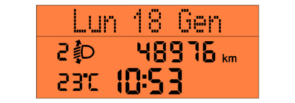
Signalling of danger / warning: "Ice" (Comfort panel only)
In order to warn the driver of the possible presence of ice on the road surface, if the outside temperature is less than or equal to 3 °C, the following is shown on the Comfort type panel display:
- the warning message
- the outside temperature flashing (for the duration of the message)
The signalling cycle only takes place once after the outside temperature is recognized to be 3°C and is only repeated if the temperature reaches the value 6°C and then returns again to below 3°C.
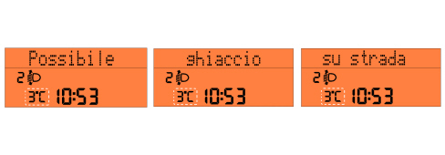
Follow Me Home function (for Modal and Comfort panels only)
This function makes it possible to light up the vehicle exterior (dipped headlamps) for a timed period even with the vehicle switched off (to get home, for security purposes, etc.).
The words "F XXX" or "Follow me XXXs" are shown on the panel display where:
- "F" (for the Modal panel) or "Follow me" (for the Comfort panel) is the "Follow Me Home" function message
- "XXX" is the number of seconds set for the lighting using the steering column switch unit. A maximum of 7 steering column switch unit impulses are permitted (210 seconds).
The display persists for about 20 seconds from the last impulse unless the function is deactivated (using the steering column switch unit).
Speed limit function (Comfort panel only)
A speed limit (with a range of between 30 and 250 km/h in 5 km/h steps; or between 20 and 155 mph in 5 mph steps) can be set and, if it is exceeded, the driver is notified.
The message disappears when the warning cycle is over and/or when the speed of the vehicle goes below 5 km/h (or the equivalent value in mph) in relation to the speed limit set.
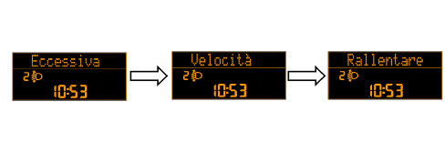
Signalling of danger / warning: "Doors / boot open"
In order to warn the driver that one or more of the doors or the boot is open, the warning light remains on until all the vehicle doors and the boot are properly shut.
The corresponding message is also shown on the display for the Comfort panel as soon as the opening is verified and an acoustic signal is activated with the doors open and the vehicle moving.
LED fault diagnosis
There is a fault diagnosis for the LEDs for the following warning lights (where fitted): the panels memorize and transmit the status (ON/OFF) of the warning lights and whether or not there is a fault via the CAN:
- Handbrake applied / insufficient brake fluid level / EBD failure
- ABS failure
A message is also displayed for the Strip and Modal panels ("LED Error" for the Strip panel or "LED Err"" for the Modal panel).